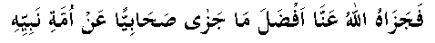

During the battle of Uhud, Nabi (Sallallahu Alayhi Wasallam) asked: "What about Sa’ad bin Rabee'? I don't know how things have gone with him. "One of the Sahaabah (RA) was sent to search for him. He went to the spot where the bodies of the dead lay in heaps. He shouted Sa’ad's (RA) name to know if he was alive. At one place, while he was announcing that he was sent by Nabi (Sallallahu Alayhi Wasallam) to find out about Sa’ad bin Rabee' (RA), he heard a weak voice coming from one direction. He turned to that direction and found that Sa’ad (RA) was lying amongst those that were killed and was about to breathe his last.
Sa’ad (RA) was heard saying: "Give my Salaam to Nabi (Sallallahu Alayhi Wasallam) with my message, 'O Nabi of Allah! May Allah Ta’ala grant you on my behalf a reward higher and more handsome than the one Allah Ta’ala has ever granted a Nabi on behalf of any of his followers', and tell my Muslim brothers, 'Nothing will save you from blame on the Day of Qiyaamah, if the enemy reaches Nabi (Sallallahu Alayhi Wasallam) before all of you have been killed.'"
With these words, Sa’ad (RA) breathed his last and passed away.

As a matter of fact, the Sahaabah (RA) have clearly shown their love for Nabi (Sallallahu Alayhi Wasallam). While they suffered wound after wound and were on their last breath, they had no complaint nor wish on their lips and could not think of anything else except the safety of Nabi (Sallallahu Alayhi Wasallam). How I wish that a sinner like me be blessed with a dot of the love that the Sahaabah (RA) had for Nabi (Sallallahu Alayhi Wasallam).